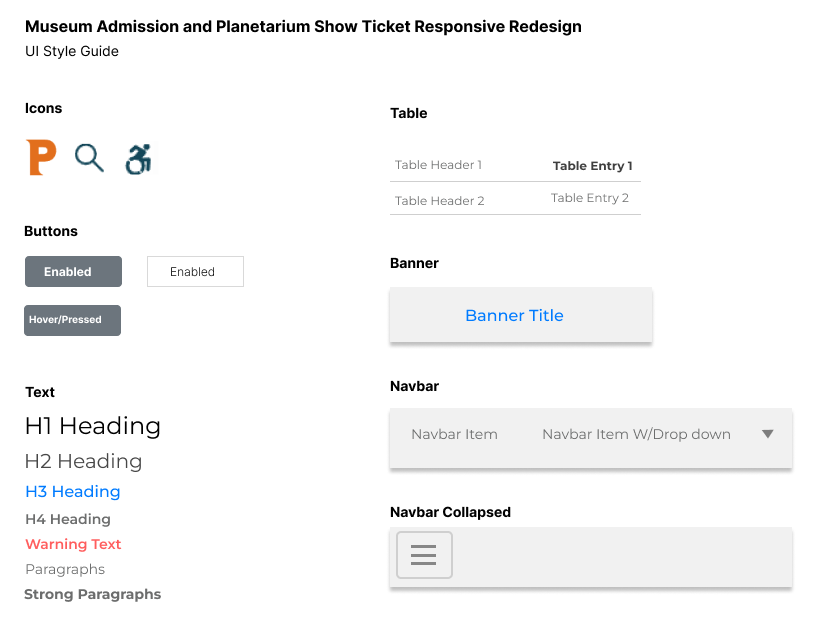

Responsive Redesign
Identified and analyzed flaws in an existing interface, created low-fidelity and high-fidelity prototypes, then coded a responsive website based on the prototypes
Part 1: Identifying Usability Problems
Finding Problems
- Design issues that I address include:
-
The lack of visual hierarchy harms the efficiency of the website.
This makes finding specific information such as museum hours or ticket pricing more difficult to find since the user must scan the large block of text. - There is no immediately obvious way to navigate back to the mmuseum homepage if the user would like to review information about events or exhibits.
- When choosing a date to visit the museum, the calendar date picker does not display the museum availabilities. Allowing the user to see which dates they are able to come visit saves them the hassle of choosing a date only to find that the museum is closed or fullly booked.
Accessibility (Investigated using WebAIM WAVE)
- Wave identified 2 errors with the page including:
- Lack of alternate text for an image
- Lack of alternate text for a form
- WAVE also identified 15 alerts including:
- Small text
- Large block of justified content (creates potentially confusing or hard to read white spaces)
- Unlabeled form control
- Redundant links
- Not clearly labeled links
- Possible headings (that are not given proper highlighting)
Part 2: Visual Redesign
Annotated Wireframes

Visual Design Style Guide
